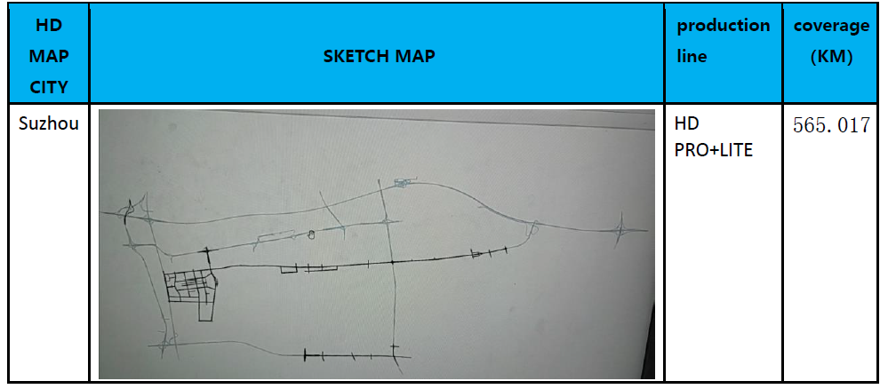
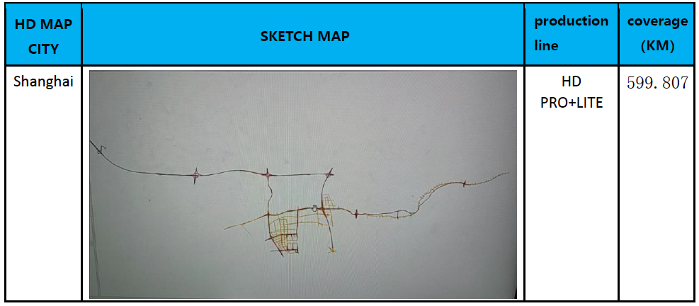
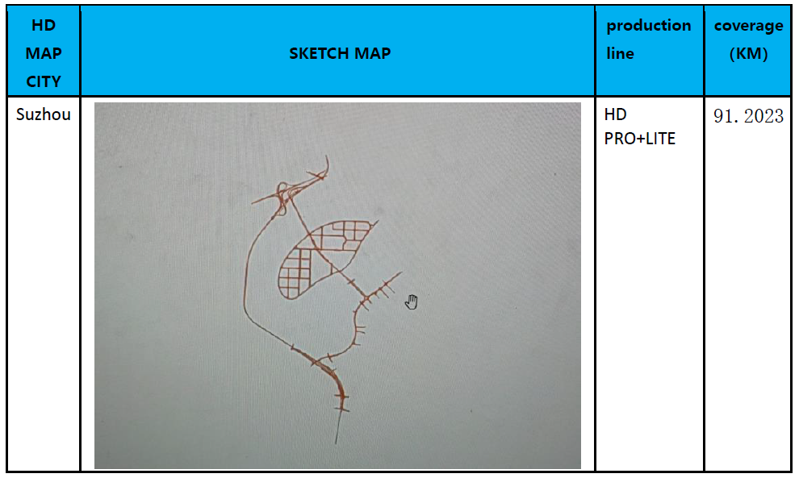

Map poc data coverage
AVP
BOSCH_WAVE3_avp_20221021_YunWeiGang:
AVP Map (COVERAGE: 59 parking space; scope: Suzhou Operation and Metropolitan Port B1)BOSCH_WAVE3_avp_20221125_YiBoKeChuangZhongXin:
AVP Map (COVERAGE: 315 parking space; Scope: Shanghai Yibo Keye Creation Center parking lot B1+B2)BOSCH_WAVE3_avp_20221015_MengLeCheng:
AVP Map (COVERAGE: 1796 parking space; scope: Suzhou Yongwang Mengli City B1+F1)BOSCH_WAVE3_avp_20221125_RBAC:
AVP Map (COVERAGE: 871 parking space; Scope: Bosch 2 factory F1 + F3-F7)BOSCH_WAVE3_3avp_20221028_RBCN:
AVP Map (COVERAGE: 562 parking space; Scope: Bosch Hongqiao F1+B1+B2)BOSCH_WAVE3_3avp_20221021_TingLanJiaYuan:
AVP Map (COVERAGE: 397 parking space; scope: Suzhou Tinglan Home F1)
Highway + City
BOSCH_WAVE3_CityHighway_20221015:
Suzhou COVERAGE: 565.017 KM
Suzhou City Express high-speed map (Scope: East Line of Central-> Loujiang Express-> East Ring Road-> Dushu Lake Tunnel (2.6km)-> Central East Line-> Modern Avenue + Beijing-Shanghai high-speed section)
Map of Suzhou City (Scope: Star Street Interchange-> Xinggang Street Tunnel-> Xinghai Street-> Modern Avenue-> Jiulongcang Times Shangcheng-> Modern Media Plaza-> Modern Avenue-> Bosch 2 Factory West Gate+ Huxi area coverage(The area is a prosperous area with many high -rise buildings, including Suzhou Center, Nisheng Hotel, Greenland Global 188 Fortune Plaza, etc.)- 
Shanghai COVERAGE: 599.807 KM
Shanghai Elevated High-speed Road Map (Scope: No. 1110, Beizhai Road, Changning District-> Beijing-Shanghai Expressway-> 225 Lane Anli Road in Jiading District+ outer Ring High Speed-Jiamin Elevated))
Shanghai Urban Map (Scope: Beizhai Road-Huaxiang Road-Longhu Hongqiao Tianjie-Hongqiao Railway Station P9 Parking Lot+ Beizheng Channel-Beizhai Road Authenticity+ Haining Road 100 (Shanghai First People's Hospital)-NorthHeng Channel-Beizhai Authentic-Zhongguancun Hongqiao Innovation Center+ Xianxia West Road Tuning+ Bosch R & D Headquarters Building (111 Linhong Road) Around the Hongqiao Science and Technology Park+ Hongqiao Railway Station)
Guangzhou COVERAGE: 91.2023 km
Guangzhou High Speed (Scope: Bioshima+High Speed)
Guangzhou City (Scope: Global Bioshima)- 
BOSCH_WAVE3_Airport_Guangzhou:
Guangzhou High Speed (Scope: Airport High Speed)